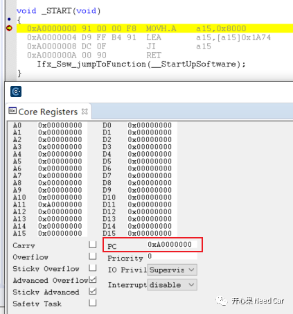
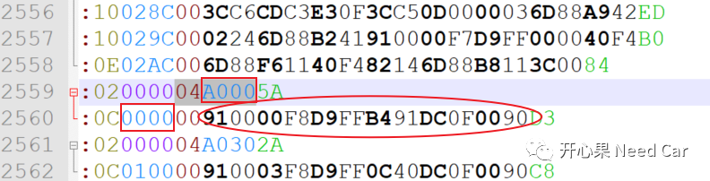
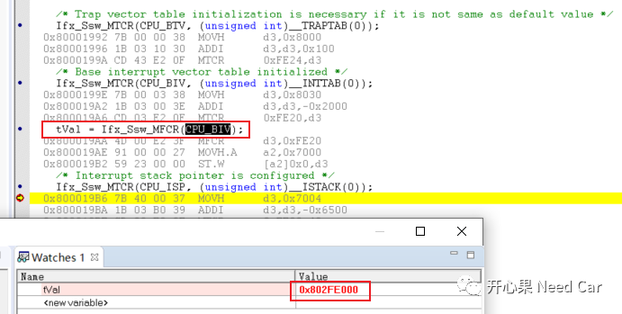
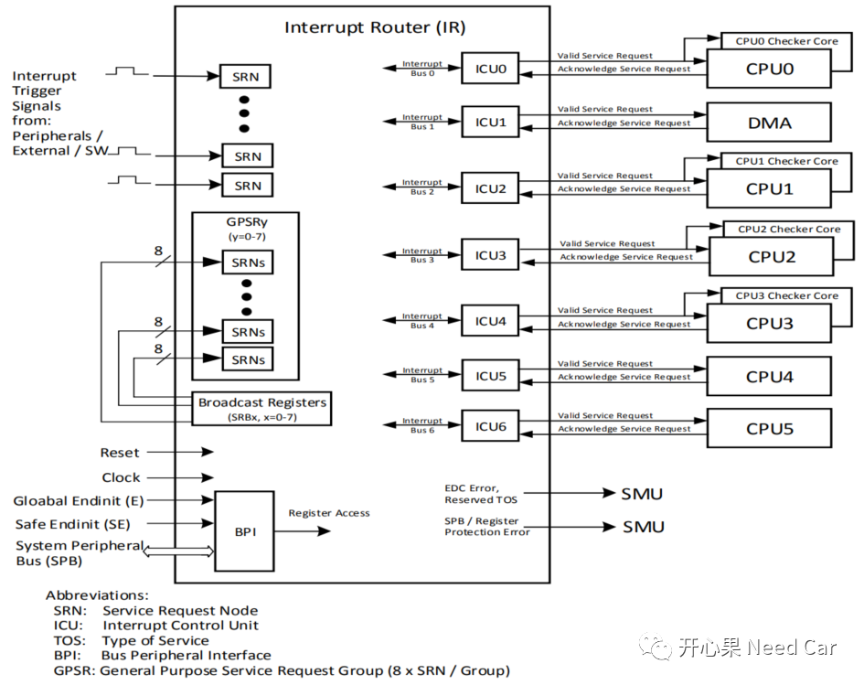
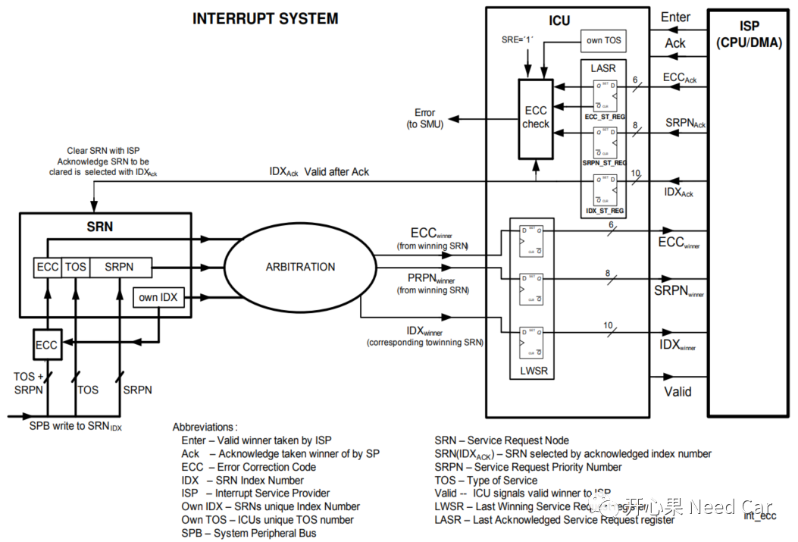

开心果 Need Car · 2022-01-22T11:19:00+08:00 · 微信原文
嵌入式开发中，main函数似乎成了我们很多开发人员理解的程序入口，真的是这样吗？main函数只能说是应用程序恢复到了一个初始状态，对CPU来说，它可不认为自己在main函数处开始执行程序的。本文通过链接文件(*.lsl)、*.map文件以及启动文件详细地聊一聊tc397（其它英飞凌系列类似）的启动过程。
...LCF_STARTPTR_NC_CPU0 = 0xA0000000;LCF_STARTPTR_NC_CPU1 = 0xA0300100;LCF_STARTPTR_NC_CPU2 = 0xA0600100;LCF_STARTPTR_NC_CPU3 = 0xA0900100;LCF_STARTPTR_NC_CPU4 = 0xA0C00100;LCF_STARTPTR_NC_CPU5 = 0xA0F00100;RESET = LCF_STARTPTR_NC_CPU0;....SECTIONS{.start_tc0 (LCF_STARTPTR_NC_CPU0) : FLAGS(rxl) { KEEP (*(.start)); } > pfls0_nc.interface_const (0x80000020) : { __IF_CONST = .; KEEP (*(.interface_const)); } > pfls0PROVIDE(__START0 = LCF_STARTPTR_NC_CPU0);PROVIDE(__ENABLE_INDIVIDUAL_C_INIT_CPU0 = 0); /* Not used */PROVIDE(__ENABLE_INDIVIDUAL_C_INIT_CPU1 = 0);PROVIDE(__ENABLE_INDIVIDUAL_C_INIT_CPU2 = 0);PROVIDE(__ENABLE_INDIVIDUAL_C_INIT_CPU3 = 0);PROVIDE(__ENABLE_INDIVIDUAL_C_INIT_CPU4 = 0);PROVIDE(__ENABLE_INDIVIDUAL_C_INIT_CPU5 = 0);}...
void _START(void){0xA0000000 91 00 00 F8 MOVH.A a15,0x80000xA0000004 D9 FF B4 91 LEA a15,[a15]0x1A740xA0000008 DC 0F JI a150xA000000A 00 90 RETIfx_Ssw_jumpToFunction(__StartUpSoftware);}/* reset the sections defined above, to normal region */


...LCF_INTVEC0_START = 0x802FE000;LCF_INTVEC1_START = 0x805FE000;LCF_INTVEC2_START = 0x808FE000;LCF_INTVEC3_START = 0x80BFE000;LCF_INTVEC4_START = 0x80EFE000;LCF_INTVEC5_START = 0x80FFE000;__INTTAB_CPU0 = LCF_INTVEC0_START;__INTTAB_CPU1 = LCF_INTVEC1_START;__INTTAB_CPU2 = LCF_INTVEC2_START;__INTTAB_CPU3 = LCF_INTVEC3_START;__INTTAB_CPU4 = LCF_INTVEC4_START;__INTTAB_CPU5 = LCF_INTVEC5_START;...
...Ifx_Ssw_MTCR(CPU_BTV, (unsigned int)__TRAPTAB(0));/* Base interrupt vector table initialized */Ifx_Ssw_MTCR(CPU_BIV, (unsigned int)__INTTAB(0));...

中断如何通知CPU/DMA


.../* Initialization of C runtime variables */Ifx_Ssw_C_Init();Ifx_Ssw_enableSafetyWatchdog(safetyWdtPassword);/* Set the CPU 0 to Idle mode, if it is not needed to be enabled */Ifx_Ssw_setCpu0Idle();Ifx_Ssw_enableCpuWatchdog(&MODULE_SCU.WDTCPU[0], cpuWdtPassword);/*Call main function of Cpu0 */Ifx_Ssw_jumpToFunction(core0_main);}
往期精彩回顾